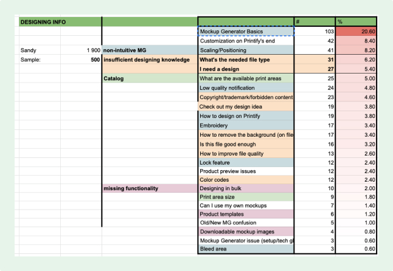
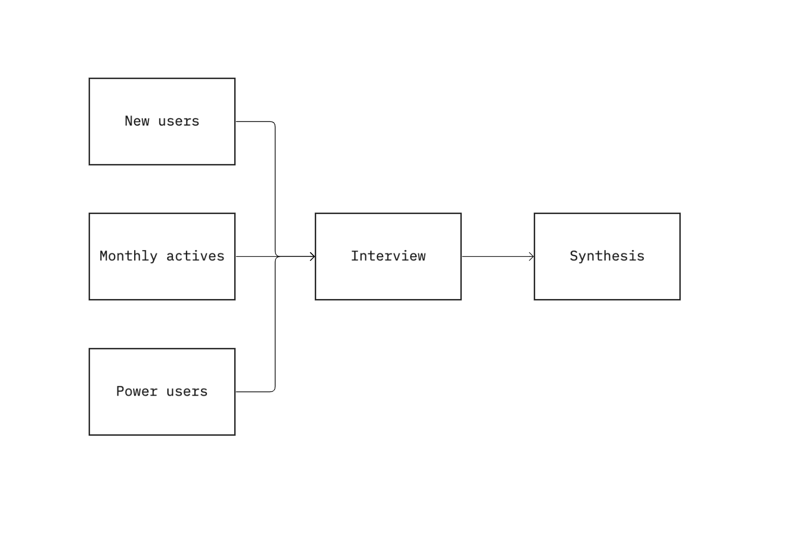
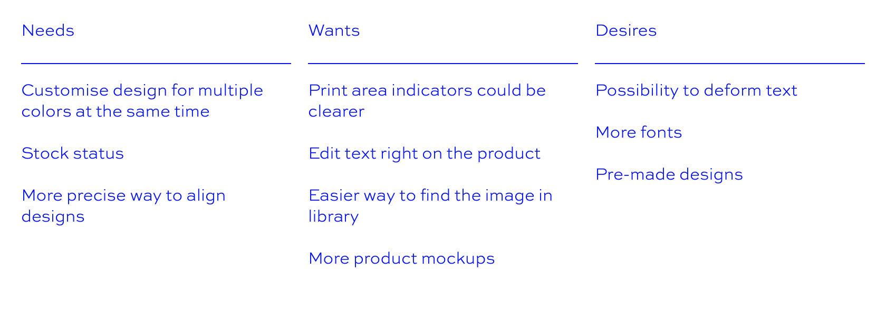
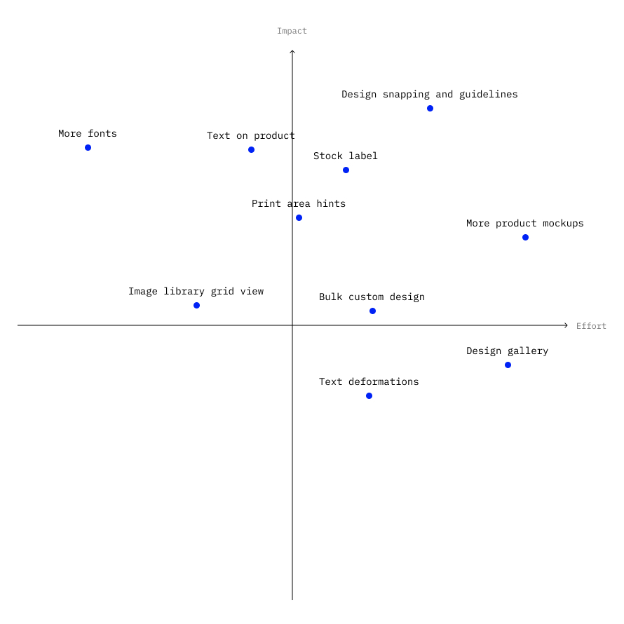
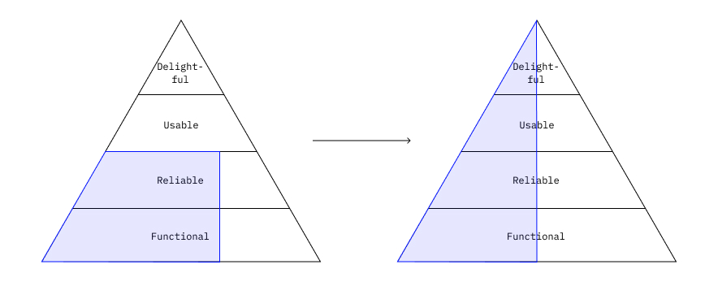
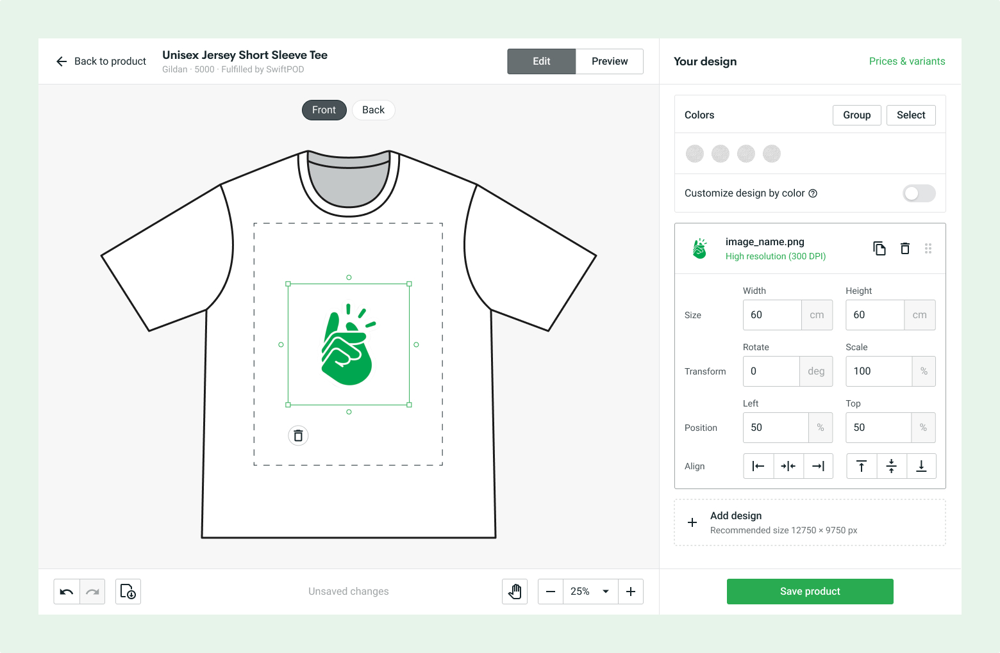
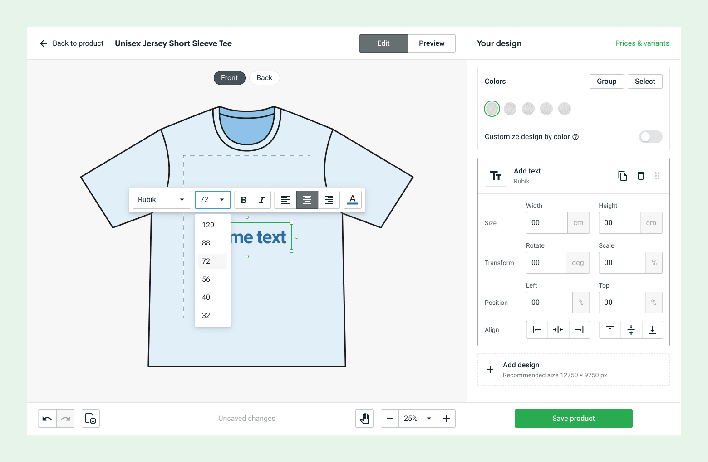
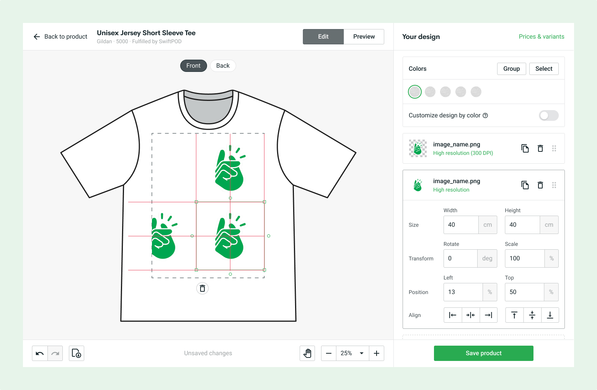
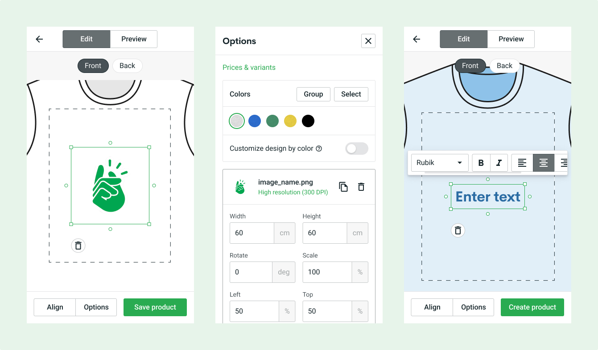
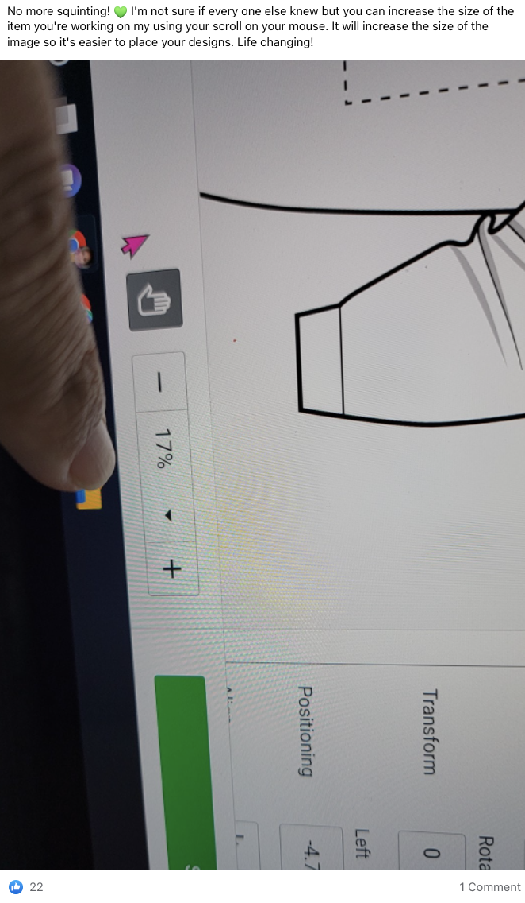

How do you take something from its initial product market fit to the next level? We knew our user base was growing and so were their needs. Over time we had collected data from customer support where users complain and ask for help, and the team had summarised the issues by category for us. This was the starting point, but surely we needed more data to triangulate and understand where we fall short. Besides having an inkling of What, more work needed to be done to understand Why.

Even though our users had already written to support with suggestions and complains, we wanted to hear it directly from them. So right at the end of the sales season, we scheduled unstructured interviews to walk through their process and main pain points. We weren't sure which user group was most affected either so we targeted a cross section of all our users - new joiners, monthly regular users and power users.

The fun part (for me personally) was tagging the conversations and discovering common patterns across the participants. Though having a large list of user problems can be overwhelming. To make the insights more actionable I also had to understand what importance each issue or solution would have to the user. I like to think in 3 categories: needs, wants and desires.

At this point I knew what the desirability was among our user base. However, building a product based on this aspect alone is like making a one-legged chair. Viability and feasibility are just as important to figure out to have a meaningful iteration.
Viability was where the money came into the picture. What will facilitate growth in revenue? What can we afford to build and validate quickly? And feasibility was a reality check with engineering. Can this work within our tech stack? Do we have the resources to build it in our team? The end result was a prioritised list of initiatives based on impact vs effort.

The initial solution allowed users to get the job done. It wasn't perfect, but the functionality was there. It's an equivalent of an instant coffee when you're tired. And our users were surely getting tired of the bare basics we offered. The quality and delight aspects were important to address in the solutions we'll build.

The solution generation and validation went beyond wireframes. I needed to present a realistic prototype to understand whether the interface is intuitive but also to what extent it delights the users. As we ended up with a rather large list of improvements, the flow was elaborate and required users to complete multiple tasks. So I ran a moderated online user testing with selected merchants to find out whether the cross section of MLP pyramid was addressed and made some changes to the designs.




This was a challenging part of the product to work on, but I also deeply enjoyed it, perhaps because I was designing a designer interface which I think designers always have ideas for. Unpacking all the user feedback and understanding how to make the power users more productive while not overhwelming newcomers is a common conundrum in product design, but here it was especially prominent.
We did measure the user metrics that we'd set up - CSAT and CES, and the trend turned positive over time as we kept releasing incrementally. Though user feedback came to us in unexpected places as well. I like this screenshot of a user sharing excitement of our recent update. If users are actively sharing and promoting our updates, I think we've might have just added some delight to their day.
